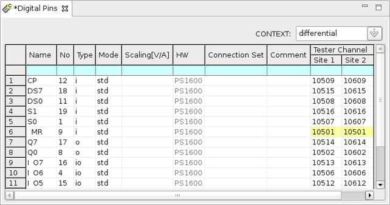

Defining additional test sites
About this task
SmarTest allows you to configure your test setup for multisite testing. You do this by defining additional sites, and then editing the pin configuration for the new sites. In theory you can edit all the information in the pin configuration table for each site. In practice, however, all sites are identical apart from the channel allocations - which must be edited separately for each site.
Before you begin
Ensure that you have completed the pin configuration for one site (site 1).
Procedure
Results
The following shows an example of pin configuration for dual site testing.
If the pins of multiple sites share exactly the same digital channels, the corresponding channels are displayed with yellow background. Please carefully check the channel assignment.

Functional changes
- Introduced before SmarTest 6.3.2
- SmarTest 7.1.3: Changed the parameter Instrument to HW in Digital Pins editor.
- SmarTest 7.1.3: Removed the parameter Ser.R[ohm] from Digital Pins editor.
- SmarTest 7.3.1: Number of supported sites changed